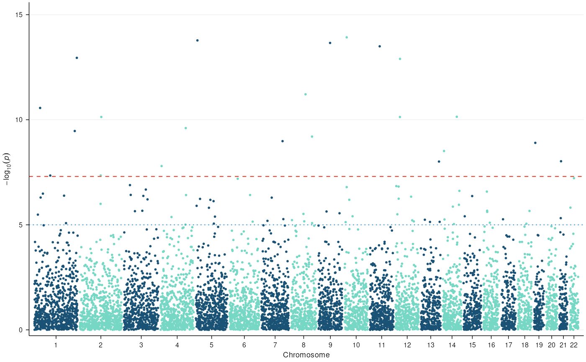

Publication-ready themes matching the figure style guides of major journals. Each theme sets appropriate font family, sizes, line weights, and spacing.
Usage
theme_nature(base_size = 7, base_family = NULL)
theme_science(base_size = 8, base_family = NULL)
theme_plos(base_size = 10, base_family = NULL)
theme_cell(base_size = 7, base_family = NULL)
theme_presentation(base_size = 16, base_family = "")
theme_poster(base_size = 20, base_family = "")Details
theme_nature(): Helvetica/Arial 5-7 pt, minimal gridlines, thin
axes (0.25 pt), compact margins. Matches Nature's requirement for
figures at 89 mm (single column) or 183 mm (double column) width.
theme_science(): Helvetica 6-8 pt, classic axes (no panel border),
thicker axis lines (0.5 pt), no grid. Science figures are narrow
(55 mm single, 120 mm double, 174 mm full width).
theme_plos(): Arial 8-12 pt (larger than Nature/Science), panel
border, centered title. PLOS requires figures at 13.2 cm single
column width, 300 dpi minimum.
theme_cell(): Arial 6-8 pt, minimalist with very thin axes
(0.2 pt), no grid, tight margins. Cell Press figures use 85 mm
single and 178 mm full width.
theme_presentation(): Large fonts (16 pt base), thick axes,
high contrast for slides projected at a distance.
theme_poster(): Extra-large fonts (20 pt base), thick axes,
readable from 1-2 meters at a conference poster.
Examples
data(example_gwas)
manhattan_plot(example_gwas) + theme_nature()
